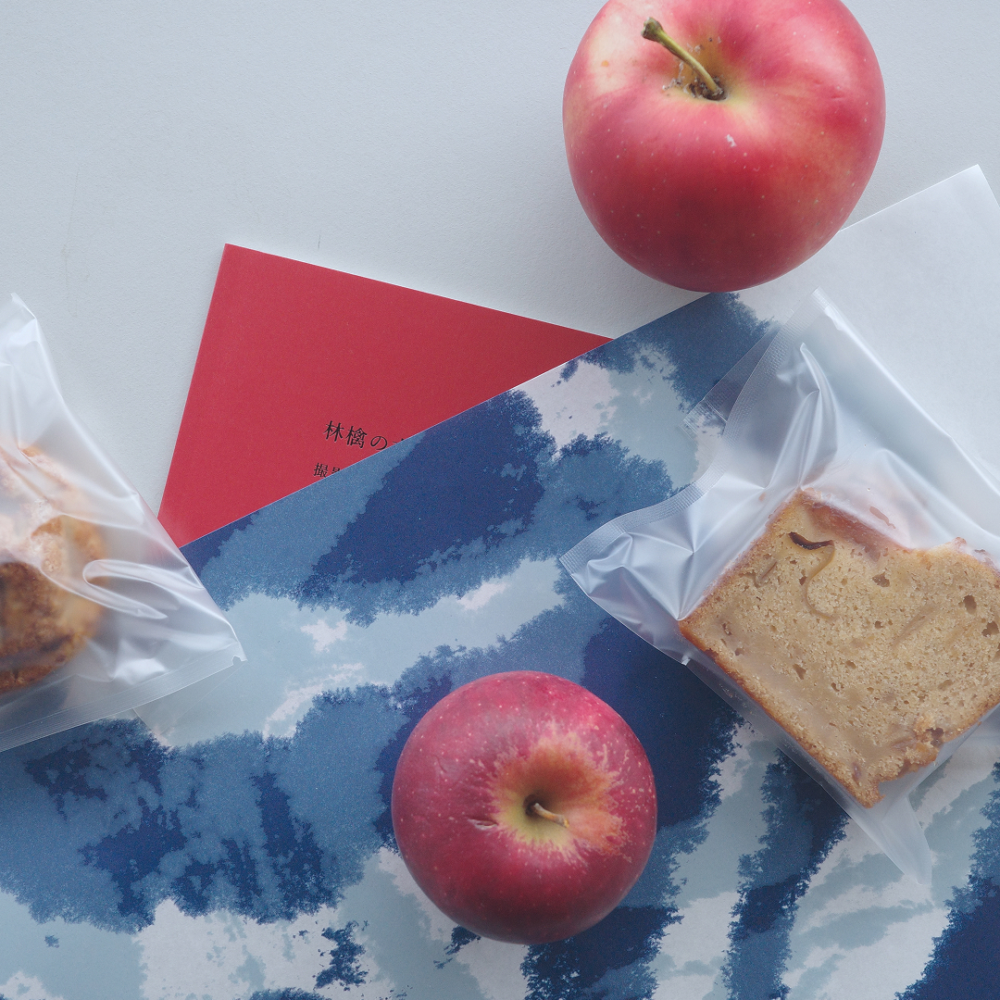

近況
春の終わりに、ある川のそばを歩いた。水面はおだやかで、光がやわらかく揺れていた。その日持っていた文庫本を土手に腰を下ろして開いたとき、ページの白さと川のひかりが、なぜかひとつのものに見えた。
店の窓から見える川も、この季節はすこし緑がかった色をしている。朝、シャッターを開けながらその流れを見るのが、最近の小さな楽しみになっている。
今月は新刊の入荷も多く、棚が少しにぎやかになった。選んだ本のことを、またここで書いていけたらと思っている。
近刊の紹介

今月おすすめしたい一冊は、内田百閒の『冥途』です。夢と現の境界が溶けていくような短篇集で、百閒の文章の静謐な美しさをあらためて感じることができます。
読み始めると、どこか川の底を漂っているような感覚になります。春のおだやかな午後に、ぜひ手にとっていただきたい本です。店頭でもご覧いただけます。